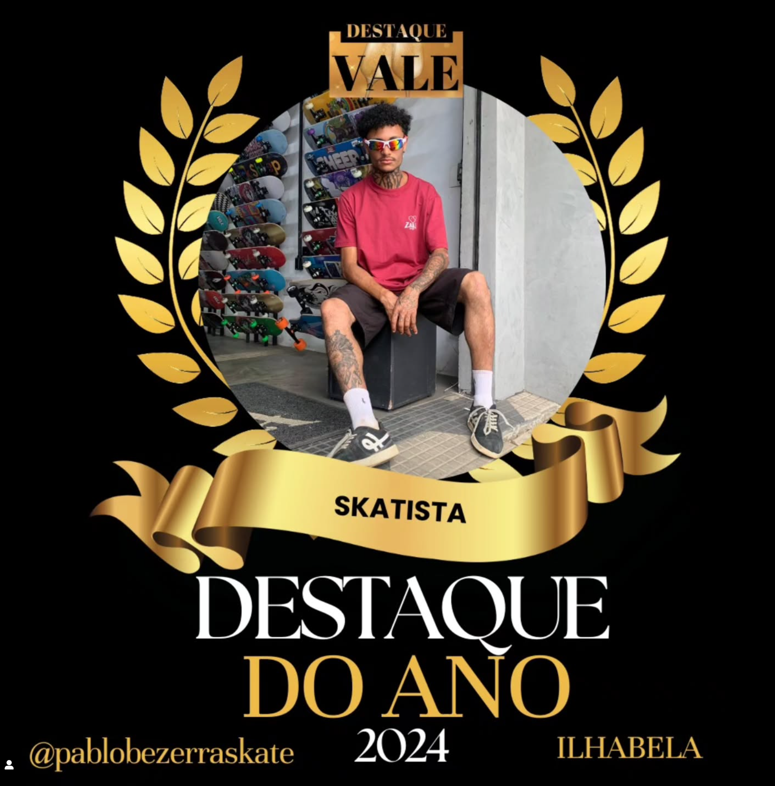
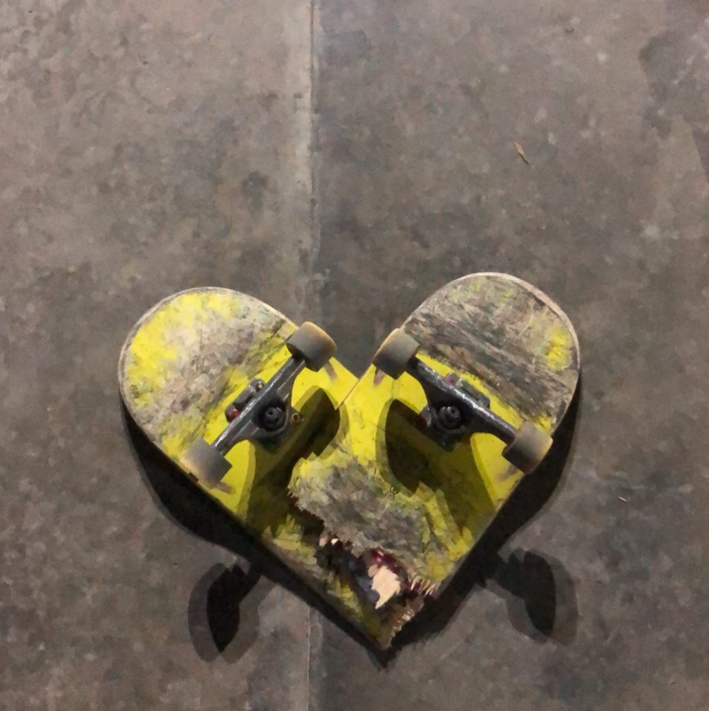

Minha Trajetória

Aulas de Skate
Aulas práticas e dinâmicas para todos os níveis.

Competições
Experiências e vitórias que me impulsionam.

Dicas & Tricks
Compartilho dicas e manobras para aprimorar seu estilo.